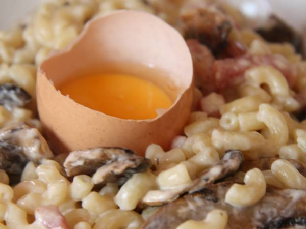

Coquillettes à la carbonara

Une savoureuse recette vite fait-bien fait, parfait pour épater les filles
Ingredients
- Un paquet de coquillettes
- Un paquet de lardons
- De la crème fraîche, y en a jamais trop
- Un jaune d'oeuf chacun
- Option: parmesan
- Sel et poivre bien sûr
- Surtout PAS D'OIGNONS!
Préparation
- Dosage:à la lure lure
- Bien cuire les lardons, genre brun
- Pendant ce temps, faire cuire les coquillettes, on va pas t'expliquer
- Couper le feu, et dans la poêle ebcore chaude,mettre la crême fraîche. Mélanger
- Assaisonner
- Servir avec un jaune d'oeuf déposé sur les pâtes
- Proposer du parmesan
- Profiter
Home